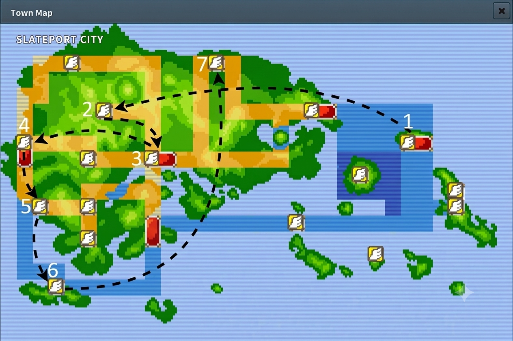

Ruta De Farmeo de Gym

Si Excadrill muere por Lucario, cambia Blastoise inmediatamente. Si Aerodactyl cae por Mismo Destino, entra Typhlosion.
Usa Salpicar y Avalancha
Usar avalancha y Estallido
Usar Avalancha y Terremoto
¡Cuidado! Si Chansey o Blissey están en el campo de batalla, saca a Typhlosion por Excadrill y ataca.
Usar Salpicar y Ventisca
Si Pelipper o Altaria lideran, usa Viento Hielo con Vanilluxe. Si algun pokemon muere , saca a Blastoise con Salpicar/Ventisca (Dependiendo del clima)

Si lidera un Lanturn, cambia a Blastoise por Vanilluxe y luego a Excadrill.
Usa Día Soleado con Aerodactyl y Estallido
Si sale el sol, cambia Typhlosion por Vanilluxe
Si Excadrill está en el campo, cambia Aerodactyl por Vanilluxe. Si Vanilluxe cae, entra con Aerodactyl. Si Excadrill cae, entra Blastoise
Si hay tormenta de arena, usa Día Soleado con Aerodactyl. Si Sigue Lloviendo, cambia a tus 2 cables Vanilluxe y Blastoise. Si Skarmory/Moltres Esta en el Campo , entra con Vanilluxe y Blastoise

Usa Salpicar y Ventisca
Salpicar con Blastoise hace un OHKO masivo a sus tipos Tierra. Togekiss neutraliza los Terremotos rivales al ser Volador.
Usa Avalancha y Ventisca. El tipo Volador de Gerania cae instantáneamente ante la combinación Roca e Hielo.
Estallido y Avalancha eliminan con facilidad a la gran mayoría de sus Pokémon de tipo Hielo.
Saca provecho de Vanilluxe con Pañuelo Elección y usa Ventisca de forma masiva para contrarrestar a su equipo de Dragones.

Usa Vozarrón y Ventisca. Si el clima cambia a lluvia pesada, saca a Vanilluxe para reiniciar con Granizo o mete a Excadrill.
Terremoto de Excadrill con Rompemoldes limpia los robustos y levitantes de tipo Eléctrico sin problemas. Aerodactyl es inmune gracias a Volador.
Usa Día Soleado con Aerodactyl en el primer turno para potenciar el Estallido de Typhlosion y barrer instantáneamente.
Vozarrón + Estallido barren los frágiles Pokémon de tipo Psíquico. Cuidado con posibles usuarios de Banda Focus.
Spam de Avalancha y Estallido. Si hay amenazas con Levitación o Robustez, cambia a Excadrill.

◉ Vozarron y Estallido
◉ Si llega a Salir Pelipper de primero , con Vanilluxe Usa Viento Hielo
◉ Si hay Tormenta de arena Aerodactyl Día Soleado
Aerodactyl Usa Dia Soleado
◉ Si Thyplosion Mueres Entra con Excadrill
◉ opcional contra Granbull (doble intimidación de ventaja), usar Ataque X en Excadrill